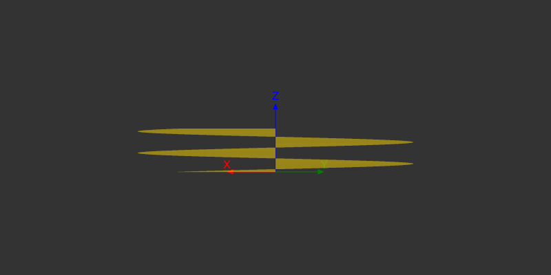
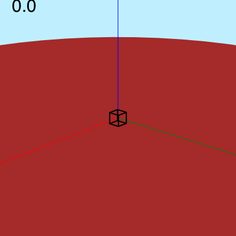
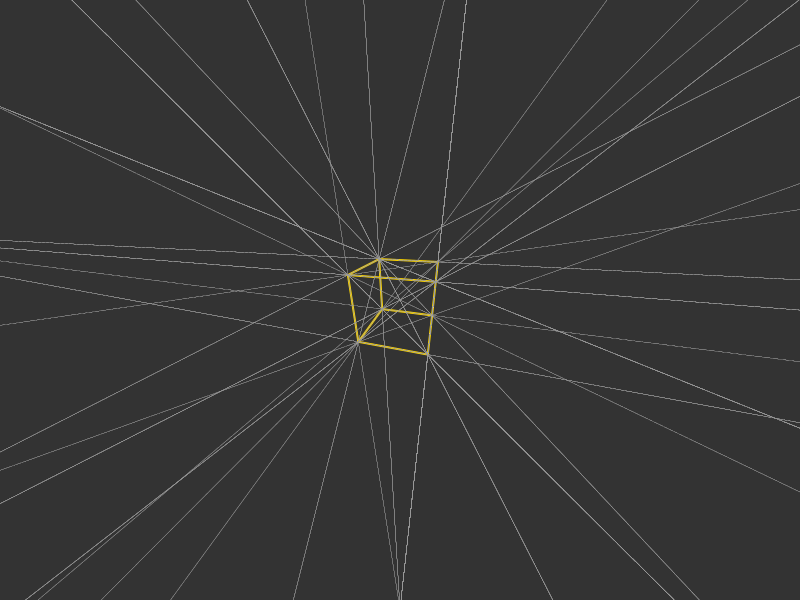
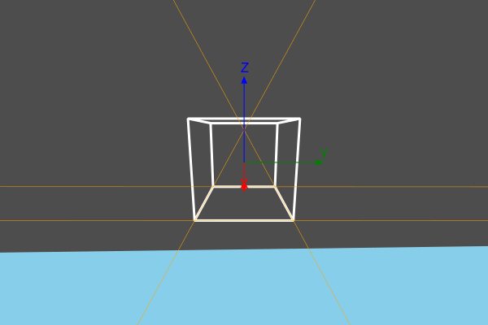

Views and perspective
Eyepoint and centerpoint
Thebes takes a simple view of life. There’s a global Thebes ‘realm’ which is created when you start using it. It’s a good idea to check and/or set the current viewing parameters when you start a new Luxor document, in case you’re inheriting anything from a previous run.
Here are the functions that control your view of the 3D scene:
helloworld()eyepoint()centerpoint()uppoint()perspective()
The first one is a useful one to remember: it simply resets all the viewing parameters to the default settings.
The eyepoint() function moves the eyepoint, and centerpoint() changes the location that is the center of your view. The uppoint() function specifies a point relative to centerpoint. A line running from centerpoint to the up point defines the “up” direction.
So, to see the side view of the helix, continued from the previous chapter, we can just lower our viewpoint a bit, from the default 100 in z down to 50:
@drawsvg beginhelix = [Point3D(200cos(θ), 200sin(θ), 5θ) for θ in 0:π/48:4π]setline(0.2)eyepoint(500, 500, 50)axes3D()sethue("gold")for p in helix pin(p, Point3D(0, 0, p.z))endend 800 400
Perspective
As yet we've seen no perspective. The default value of the perspective parameter, as returned by perspective(), is 0. This means that there's none of that foreshortening or converging of lines that head off into the distance. And if you look at a cube, it has that familiar unrealistic appearance of cubes drawn without perspective. It doesn't matter if you move the eyepoint further away, either.
function makecube() cube = [ Point3D(1, 1, -1), Point3D(1, -1, -1), Point3D(-1, -1, -1), Point3D(-1, 1, -1), Point3D(1, 1, 1), Point3D(1, -1, 1), Point3D(-1, -1, 1), Point3D(-1, 1, 1)] r = Point3D[] for e in ( [1, 2, 3, 4, 1], [5, 6, 7, 8, 5], [5, 1, 2, 6, 7], [7, 3, 4, 8, 5]) append!(r, cube[e]) end return rend@drawsvg beginsethue("magenta")pin(50makecube())end 800 400" fill-opacity="1"/>
<path fill="none" stroke-width="2" stroke-linecap="butt" stroke-linejoin="miter" stroke="rgb(100%25, 0%25, 100%25)" stroke-opacity="1" stroke-miterlimit="10" d="M 400 281.648438 L 329.289062 240.824219 L 400 200 L 470.710938 240.824219 L 400 281.648438 L 400 200 L 329.289062 159.175781 L 400 118.351562 L 470.710938 159.175781 L 400 200 L 400 281.648438 L 329.289062 240.824219 L 329.289062 159.175781 L 400 118.351562 L 400 200 L 470.710938 240.824219 L 470.710938 159.175781 L 400 200 Z M 400 281.648438 "/>
</svg>)
This animation views the cube and changes the perspective slowly, starting at 0, then moving from 300 up to 1400.

As the value of perspective increases, the apparent magnification increases, and parallel lines start to converge. The next example shows the converging parallel lines.
function makecube() cube = [ Point3D(1, 1, -1), Point3D(1, -1, -1), Point3D(-1, -1, -1), Point3D(-1, 1, -1), Point3D(1, 1, 1), Point3D(1, -1, 1), Point3D(-1, -1, 1), Point3D(-1, 1, 1)] r = Point3D[] for e in ( [1, 2, 3, 4, 1], [5, 6, 7, 8, 5], [5, 1, 2, 6, 7], [7, 3, 4, 8, 5]) append!(r, cube[e]) end return rend@drawsvg begineyepoint(200, 50, 100)perspective(150)sethue("gold")pts = pin(50makecube())sethue("grey60")setline(0.1)for p1 in pts for p2 in pts p1 == p2 && continue rule(p1, slope(p1, p2)) endendend 800 600
There are enough converging parallel lines there to give an ancient Egyptian architect nightmares.
What are the units of the number you provide to perspective()? I don't know - it's a vague magnification constant.
Orbits
To fly around the scene, move the eyepoint around while looking at the center.
using Thebes, Luxorfunction frame(scene, framenumber, object) background("skyblue") setlinejoin("bevel") setline(3.0) sethue("grey30") carpet(500) eased_n = rescale(scene.easingfunction(framenumber, 0, 1, scene.framerange.stop), 0, 1, 0, 2π) sethue("white") perspective(200) eyepoint(200cos(eased_n), 200sin(eased_n), 40) pts = pin(50object) sethue("orange") setline(0.5) for pair in ((1, 2), (2, 3), (3, 4), (4, 1)) rule(pts[first(pair)], slope(pts[first(pair)], pts[last(pair)])) end axes3D()endfunction makecube() cube = [ Point3D(1, 1, -1), Point3D(1, -1, -1), Point3D(-1, -1, -1), Point3D(-1, 1, -1), Point3D(1, 1, 1), Point3D(1, -1, 1), Point3D(-1, -1, 1), Point3D(-1, 1, 1)] r = Point3D[] for e in ( [1, 2, 3, 4, 1], [5, 6, 7, 8, 5], [5, 1, 2, 6, 7], [7, 3, 4, 8, 5]) append!(r, cube[e]) end return rendfunction main() w = 600 h = 400 movie1 = Movie(w, h, "3D movie") cube = makecube() d = animate(movie1, Scene(movie1, (s, f) -> frame(s, f, cube), 1:150, easingfunction=easeinoutsine), creategif=true, framerate=20, pathname="/tmp/orbiting-a-cube.gif") return dendmain()